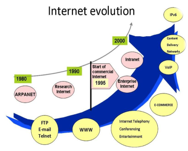
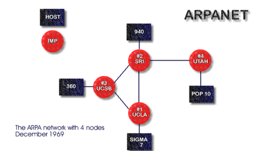
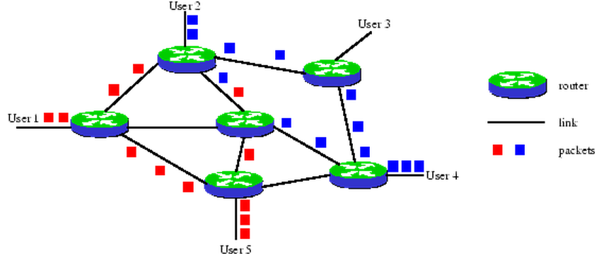

Webtechnology
Chapter 1 - Introduction to the Internet and the World Wide Web
Overview
- ...
- ...
- ...
- ...
Evolution of the Internet
The Internet
- a global network of computers
- was made possible by the convergence of computing and communications technologies.
Arpanet
In the late 1960s, ARPA (the Advanced Research Projects Agency) rolled out blueprints for networking the main computer systems of about a dozen ARPA-funded universities and research institutions.
Arpanet
They were to be connected with communications lines operating at a then-stunning 56 Kbps - this at a time when most people (of the few who could) were connecting over telephone lines to computers at a rate of 110 bits per second.
Arpanet
ARPA proceeded to implement the ARPANET.
Arpanet
Rather than enabling researchers to share each other’s computers, it rapidly became clear that communicating quickly and easily via electronic mail was the key early benefit of the ARPANET.
This is true even today on the Internet, which facilitates communications of all kinds among the world’s Internet users.
Packet Switching
One of the primary goals for ARPANET was to allow multiple users to send and receive information simultaneously over the same communications paths (e.g., phone lines).
The network operated with a technique called packet switching, in which digital data was sent in small bundles called packets.
Packet Switching
The packets contained address, error-control and sequencing information.
The address information allowed packets to be routed to their destinations.
TCP/IP
The protocol (i.e., set of rules) for communicating over the ARPANET became known as TCP - the Transmission Control Protocol.
TCP ensured that messages were properly routed from sender to receiver and that they arrived intact.
TCP/IP
As the Internet evolved, organizations worldwide were implementing their own networks for both:
- intraorganization (i.e., within the organization) communications
- (i.e., between organizations) communications
TCP/IP
-
Challenge:
- get these different networks to communicate.
-
ARPA:
- development of IP (Internet Protocol)
- truly creating a network of networks, the current architecture of the Internet
TCP/IP
The combined set of protocols is now commonly called TCP/IP.
- Each computer has unique IP address.
- Current IP standard is IPv4.
- IPv6 is being deployed.
Explosive growth of the Internet
- First limited to universities and research institutions.
- Next came the military.
- Eventually public access.